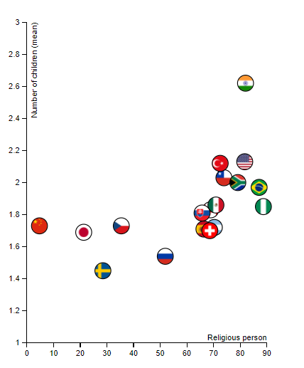
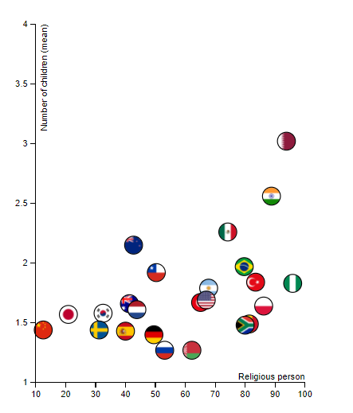
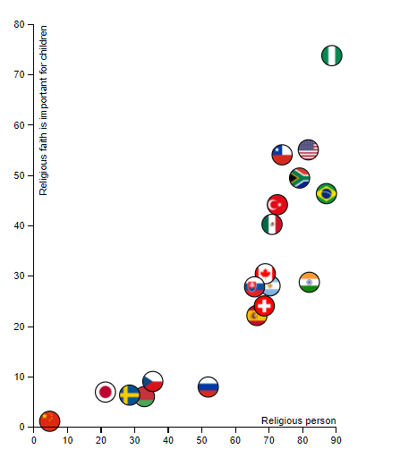
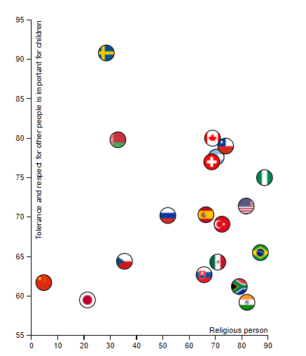

The tool
Discovery process 1
Discovery process 2
Learnings
Discovery process 1
Discovery process 2 concerns mainly the religion and the children: what are the religious values for children and how they evolved through time.
- Is “the more religious you are the more children you have” sentence true?
1990-1994:
The correlation is not so obvious. China is not religious at all and has the same rate as Switzerland who have 70% of people stating that they are religious.
2010-2014:
Here again, no real correlation. So, the sentence is false (except for Qatar who fills up it perfectly).
- Is religion something that is still given to children?
In 1990-1994:
It seems like countries with religious citizens have highest rates for “Religious faith is important for children”, even though it’s very spread.
For a lot of countries, religious faith is less important for children than it was before. This is not true for highly religious countries such as Qatar or Tunisia, where religion is seemed more important.
- Are tolerance and respect religious values shared to children of religious people?
1990-1994:
2010-2014:
No correlation. Sweden has fewer religious people, but the value is high. However, we see that over the time, this value has dramatically increased in the world.
This project allowed me to learn HTML, CSS and javascript again, as I already knew some but had forgotten almost everything.
Also, before the project 2 I never used d3. Project 2 allowed me to know more about this javascript library and how to program with it. I feel now more comfortable with the tool.